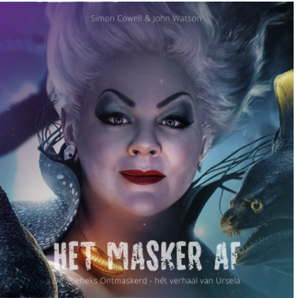
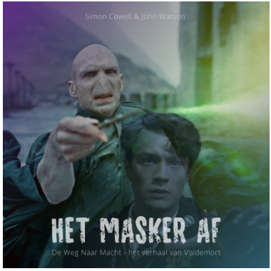
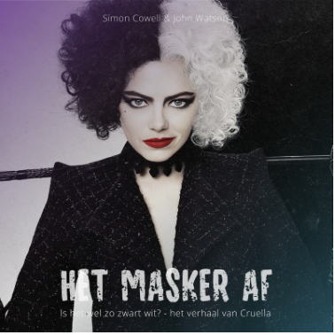
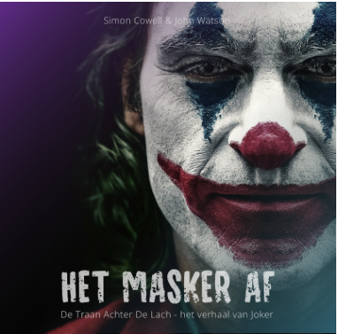
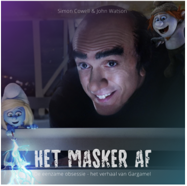
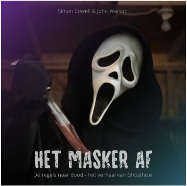

In de afleveringen van Het Masker Af krijg je elke week een exclusief kijkje in de psyche van de grootste film-slechteriken. Elke aflevering begint met een korte introductie van onze gast en een disclaimer, waarna Simon je meeneemt in het verhaal van de slechterik: wie hij is en waar we hem van kennen. Het interview zelf is geen standaard vraag-en-antwoord sessie; de slechterik krijgt alle ruimte om zijn verhaal te vertellen, zich emotioneel open te stellen en zijn kant van de zaak toe te lichten. Na het gesprek schuift een psycholoog aan om de psychologische oorzaken van hun daden te bespreken en diep in te gaan op wat hen dreef. Bereid je voor op een unieke, leerzame ervaring waarbij je de schurken leert kennen zoals je ze nog nooit hebt gezien.
Haar daden echoën door de diepten van de zee. Was de wraak op haar halfbroer enkel dorst naar macht, of schuilt er meer achter?
Ontdek het ware verhaal van Ursula
21-11-2024 43 min
In deze aflevering ontrafelen we het verhaal van Voldemort: een ziel die gedreven wordt door macht en angst. Hoe werd Tom Riddle de meest gevreesde tovenaar aller tijden? Ontdek de dieperliggende krachten en keuzes achter zijn pad naar het kwaad.
Ontdek het ware verhaal van Voldemort
21-11-2024 43 min
In deze aflevering gaan we in op de jeugd van Cruella de Vil: Zo geboren of zo gevormd. Op welke manier heeft haar unieke uitstraling een rol gespeeld in wie ze nu is? Kom achter de achterliggende woede die haar tot wraak brengt.
Ontdek het ware verhaal van Ursula
21-11-2024 43 min
In deze aflevering gaan we in op het verhaal van Joker: De traan achter de lach. Welke mentale problemen heeft hij en hoe gaat hij hiermee om? Wat zag Harley Quinn in hem wat wij niet zagen? Kom erachter in deze informatieve podcast.
Ontdek het ware verhaal van Joker
21-11-2024 43 min
In deze aflevering gaan we in op het verhaal van Gargamel: De eenzame obsessie. We komen erachter hoe de obsessie met de smurfen, gargamel ook een minder eenzaam bestaan geeft.
Ontdek het ware verhaal van Gargamel
21-11-2024 43 min
Hoe is het om het masker te zijn voor andere schurken? Hoor in deze podcast het verhaal van Ghostface, de schurk van een van de meest bekende horrorfilms op aarde. Wat vind hij nou van de acties van de mensen die hem als masker gebruiken?
Ontdek het ware verhaal van Ghostface
21-11-2024 43 min
Volg ons op instagram, tiktok en snapchat